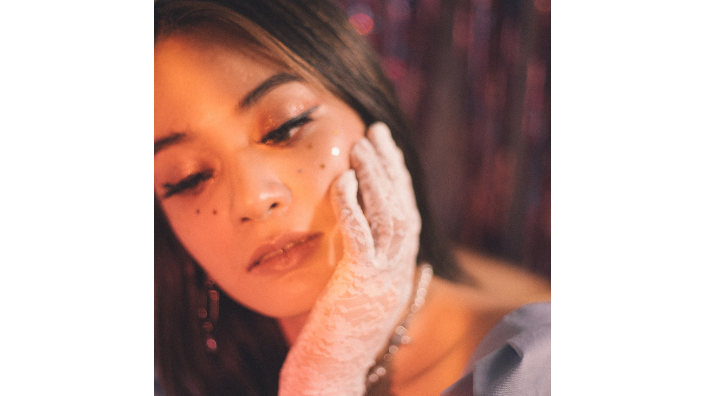
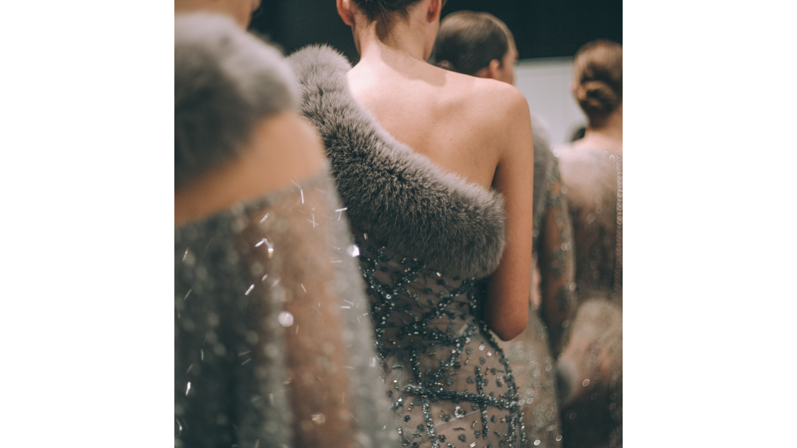

MY
STORY
STORY
I didn't start in a studio. I started by altering my own clothes because nothing fit the way I wanted. That turned into making pieces from scratch, then taking on small client work. It grew slowly, but it stayed honest.
There wasn't a single turning point. It was a series of small jobs, late nights, and mistakes I had to fix myself. Over time, I built a process that works for me and for the people I design for.